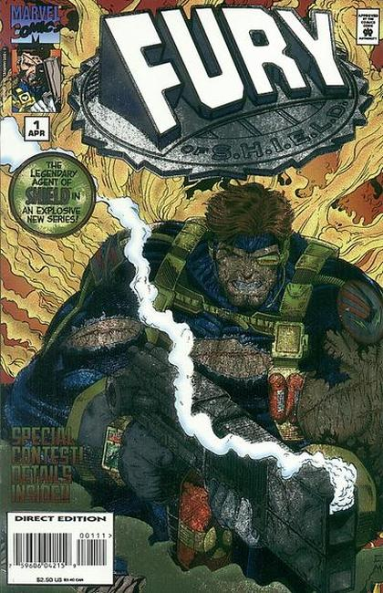
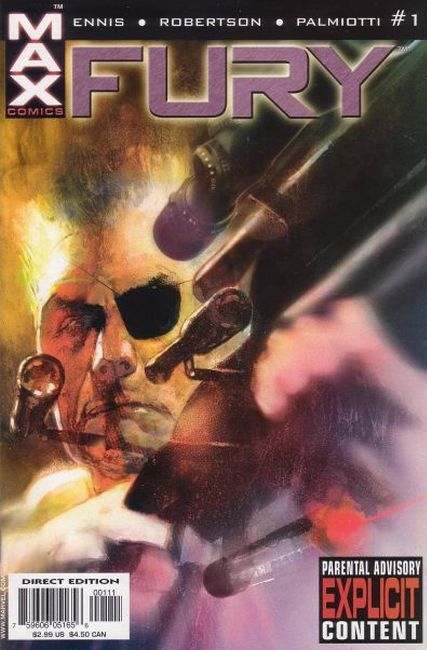
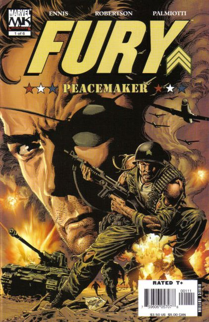
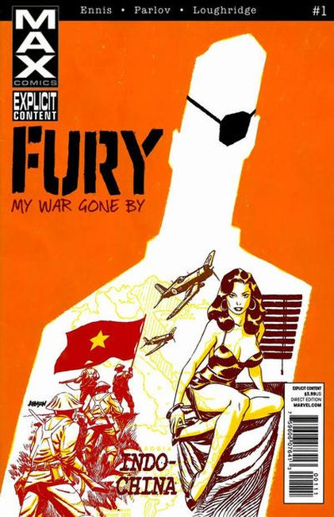

1994: Wolverine and Iron Man guest star in a 64-page comic that reveals the definitive origin of Nick Fury and S.H.I.E.L.D.! In a saga spanning from World War II to the present, Nick dukes it out with a bevy of baddies that includes Baron Von Strucker and Arnim Zola. Written by Barry Dutter. Art by M.C. Wyman, Chris Ivy and Greg Adams. Painted cover by Lou Harrison.

1995: The new lean, mean S.H.I.E.L.D. explodes into the nasty '90s: a world of cyber-aged espionage and Tom Clancy-style techno-wars. This series is loaded with the firepower of the all-star creative team of legendary writer Howard Chaykin and the turbo-charged Image artist, Corky C. Lehmkuhl! Plus: this issue features the first salvo of the S.H.I.E.L.D. Decoder Contest! Hidden throughout issues of this series are secret messages - actually clues in a nationwide contest! These scrambled messages are all decipherable with the Decoder card, available with issue #4P.
Written by Howard Chaykin. Illustrations and foil cover by Corky C. Lehmkuhl and Mark McKenna.

2001: This Mature Readers adventure tells the story of an older, but no wiser, highly p.o.'d Nick Fury who's found himself on the scrap heap and wants nothing more than to go back into action. But the cold war is over, and the days when S.H.I.E.L.D. and Hydra engaged in complex games of strategy and espionage with the fate of the world at stake are gone. Or are they? After a brisk firefight in the Mexican desert, Fury discovers both ex-S.H.I.E.L.D. and ex-Hydra personnel among the enemy dead. Further evidence that the glory days when good was good and evil was evil are behind him and fading fast. But a ray of light on the horizon comes from an unexpected source: an old enemy of Nick's is in town, an ex-Hydra soldier who almost killed our grizzled hero, and vice versa, more than a dozen times.
Garth Ennis (PUNISHER, Preacher) on words, Darick Robertson (Transmetropolitan) on pencils, and Jimmy Palmiotti (PUNISHER) on inks! Cover by Bill Sienkiewicz.

2006: 'Kasserine Pass': Before he presided over S.H.I.E.L.D., before he ran with the Howling Commandos, Sgt. Nick Fury fought on the blood-stained sands of the Tunisian desert. It was here that he came face to face with the incomparable might of the 21st Panzer Division and its skilled warrior commander -- General Stephen Barkhorn -- and barely lived to tell about it. And it was there that he got a second chance at life...and revenge. In this gripping limited series, Garth Ennis (Ghost Rider, Punisher) and Darick Robertson (Punisher: Born) offer a never-before-seen glimpse into the soul of a warrior you only think you know. Inked by JIMMY PALMIOTTI Cover by MIKE DEODATO JR.

2012: Colonel Nick Fury, veteran CIA operative, has been at war for a lifetime. Now he sits alone in a dank hotel room, coughing his confession into a tape recorder, laying out a legacy of carnage stretching back to World War II. Because when that war ended, another one began - and Fury sought it out, regardless of the cost to those who loved him, including loyal George Hatherly, congressman Pug McCuskey and the beautiful Shirley DeFabio. From Indochina to Cuba, Vietnam to Nicaragua, Fury battled across the decades, encountering young Marine sniper Frank Castle and the nightmarish Barracuda - his constant lust for combat blinding him to all other concerns. But the end is coming. The debt is long past due. And Fury's true legacy will soon be written in blood for all to see.
Written by Garth Ennis. Art by Goran Parlov. Cover by Dave Johnson.